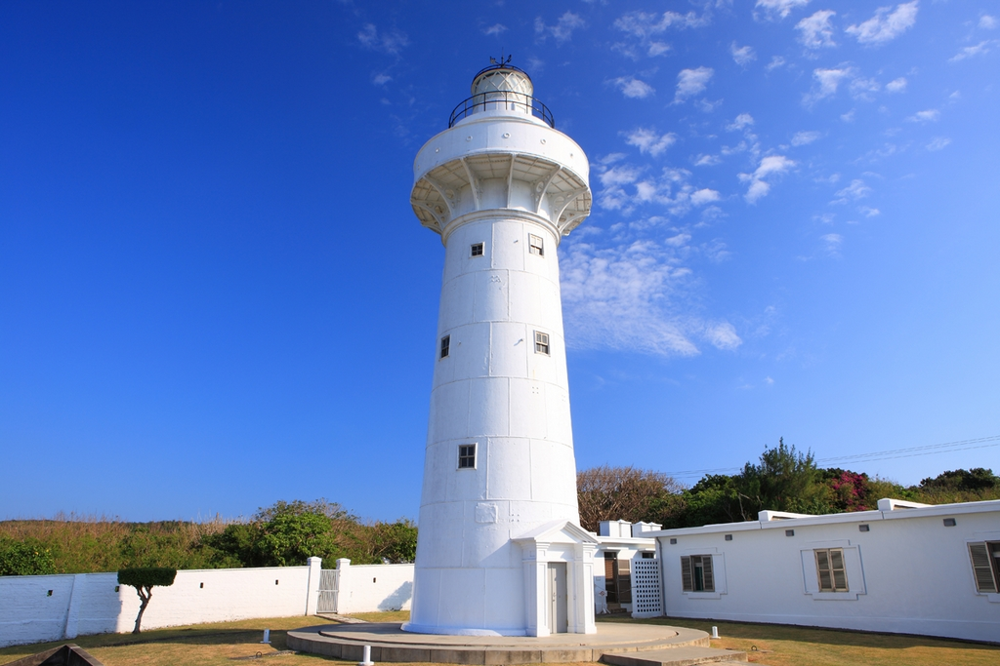

鵝鑾鼻燈塔

鵝鑾鼻燈塔是一座位於臺灣屏東縣恆春鎮墾丁國家公園鵝鑾鼻的燈塔。該燈塔一度被認定為台灣最南端的標誌也是照射距離最遠的燈塔，後被台灣最南點地標取代。最初落成於1883年，並經多次重修，現今建物為中華民國政府於1962年重修建成。
鵝鑾鼻燈塔是一座位於臺灣屏東縣恆春鎮墾丁國家公園鵝鑾鼻的燈塔。該燈塔一度被認定為台灣最南端的標誌也是照射距離最遠的燈塔，後被台灣最南點地標取代。最初落成於1883年，並經多次重修，現今建物為中華民國政府於1962年重修建成。
1991年，「國立海洋生物博物館」籌備處正式成立，篳路藍縷的規劃建設工作於焉展開…，歷經無數的努力與挫折，終於在民國89年2月25日完成「台灣水域館」開館，從此正式朝向國際海洋教育與研究的無限領域邁開腳步。